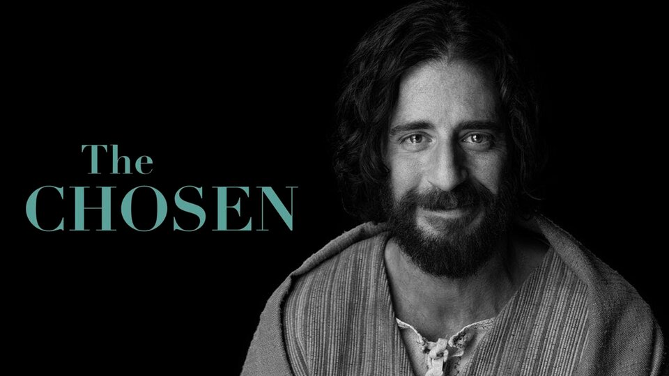

Em Breve
Nos Cinemas
Personagens e Elenco
Jesus(Jonathan Roumie)
O personagem principal da série é retratado da maneira como se imagina que as pessoas que viviam em sua época o viam: um ser humano. Ao contrário dos evangelhos que relatam as experiências e gestos de Jesus já a partir da compreensão que os apóstolos tiveram após os acontecimentos da Paixão, Morte e Ressureição, isto é, em uma perspectiva teológica, The Chosen mostra um Jesus de Nazaré como um homem comum, que comia, bebia, trabalhava, dançava e que interpelava as pessoas em meio aos acontecimentos cotidianos.

Mãe Maria(Vanessa Benavente)
Maria, mãe de Jesus, foi a mulher escolhida soberanamente por Deus pela qual nosso Senhor e Salvador veio ao mundo. Ela também é conhecida como Maria de Nazaré. Pouco se sabe sobre quem foi Maria, mãe de Jesus, especialmente com respeito a detalhes biográficos.

Simão(Shahar Isaac)
Pedro nasceu com o nome de Simão, em Betsaida, na Galileia, e era irmão de André, que também se tornou apóstolo. Era um pescador, casado, com pelo menos um filho, morando em Cafarnaum. Conheceu Jesus quando este pediu para utilizar um de seus barcos de modo a poder pregar para uma multidão que o aguardava
Judas Iscariotes(Luke Dimyan)
Judas Iscariotes foi um dos 12 apóstolos de Jesus Cristo. Segundo os Evangelhos canônicos, Judas foi o traidor que vendeu Jesus aos soldados romanos, por 30 moedas de prata. Judas deu um beijo em Jesus para identificá-lo aos guardas que o procuravam. Por essa razão, seu nome e a expressão “beijo de Judas” passaram a ser relacionados à traição.

Maria Madalena(Elizabeth Tabish)
Maria Madalena é uma mulher que perdeu o pai quando criança e que foi abusada sexualmente por um soldado Romano. Ambas tragédias estão presentes no episódio 1 da 1ª Temporada. Em meio a tantos traumas, em algum ponto, ela foi possuída por 7 demônios
Mateus(Paras Patel)
Morava e trabalhava como coletor de impostos em Cafarnaum, na Palestina. Quando ouviu a Palavra de Jesus: “Segue-me” deixou tudo imediatamente, pondo de lado a vida ligada ao dinheiro e ao poder para um serviço de perfeita pobreza: a proclamação da mensagem cristã! Ele trocou de nome para Mateus, o “dom de Deus”.
Natanael(Austin Reed Alleman)
Natanael pertencia ao povo de Israel por convicção pessoal e não somente por mera descendência. Natanael tinha um coração puro e nele não havia má fé. O coração de Natanael buscava a verdade que ali já estava se tornando conhecida por ele. A verdade é uma pessoa: Jesus, o Cristo.
Sobre a Série
Lançada em 2019, a obra foi produzida por meio de uma campanha de financiamento coletivo que arrecadou mais de 10 milhões de dólares a partir de 19 mil investidores. Nela, a história de Jesus Cristo é contada a partir de relatos bíblicos daqueles que foram escolhidos por ele, como seus apóstolos.
Perguntas frequentes